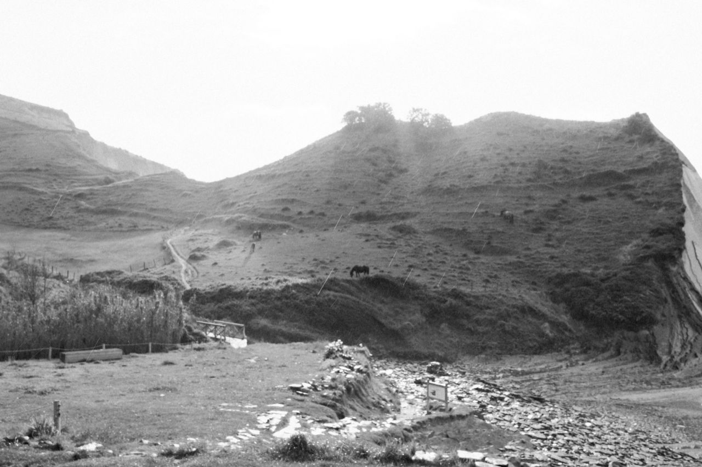
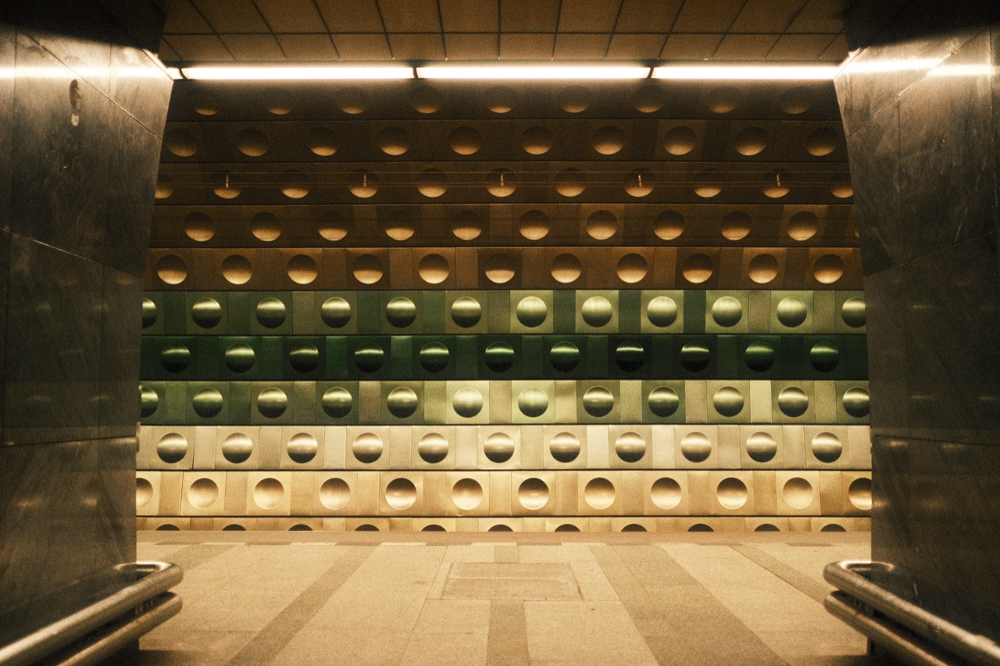
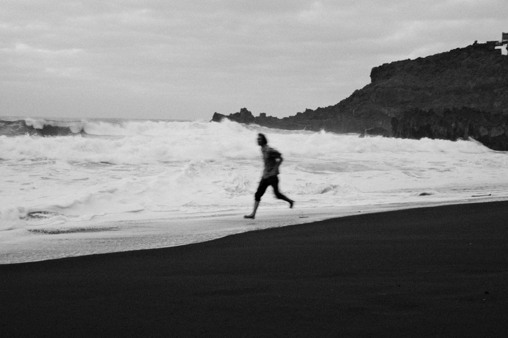
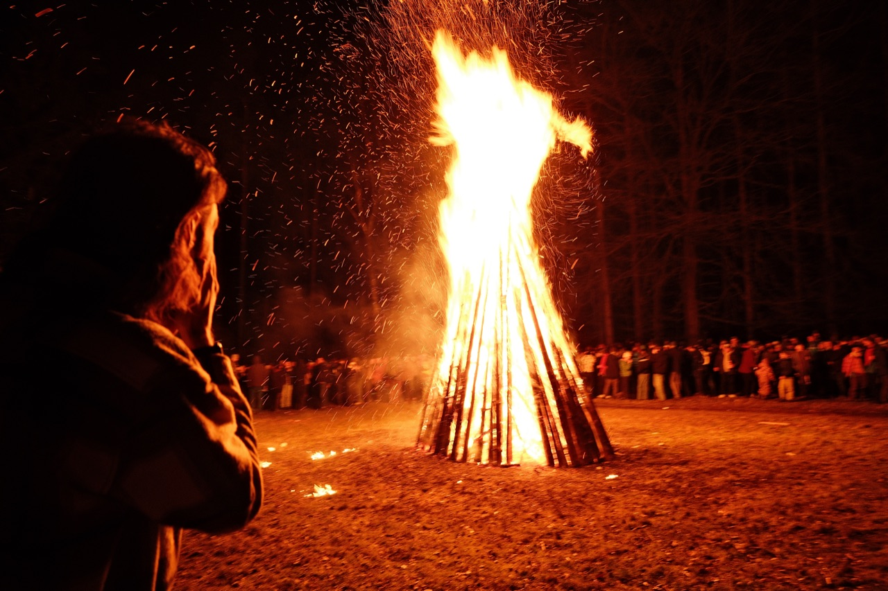
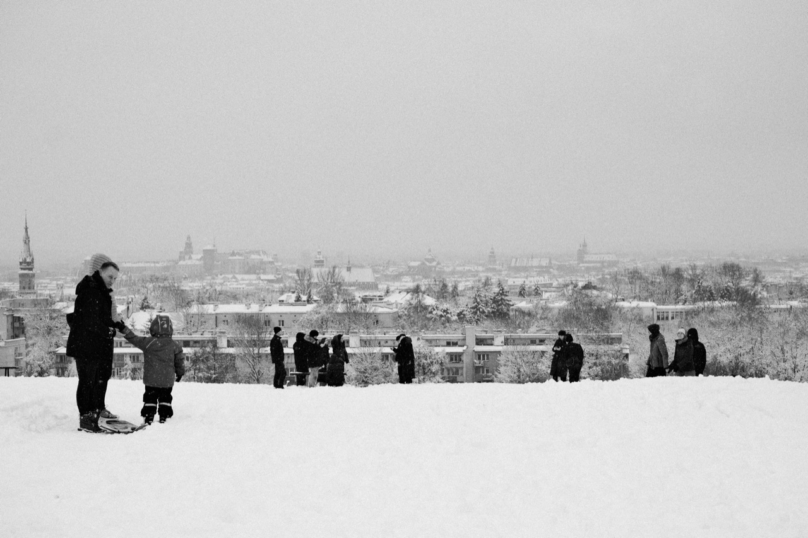
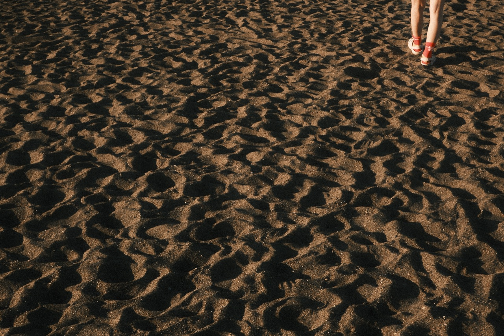
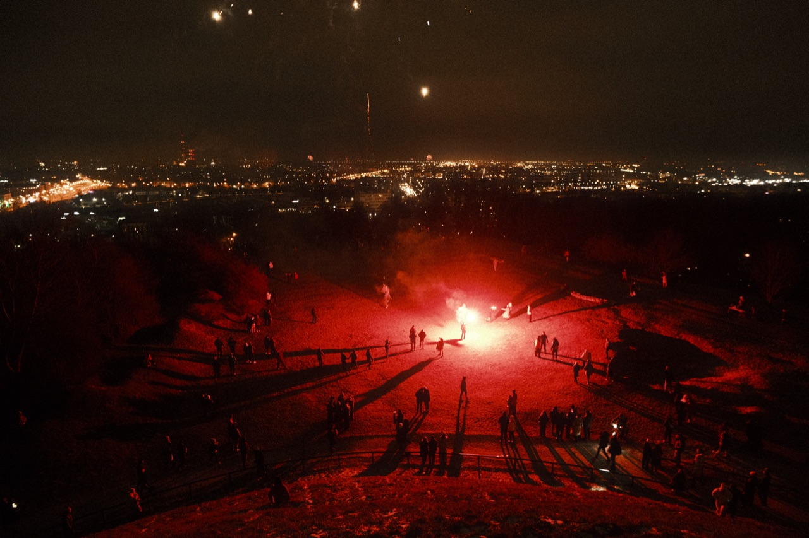
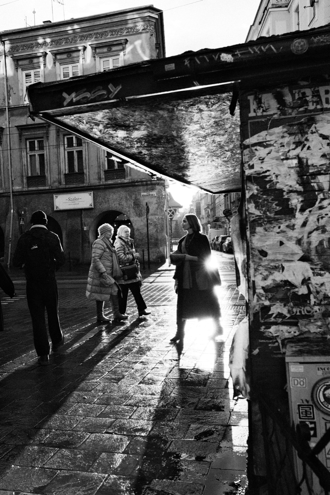
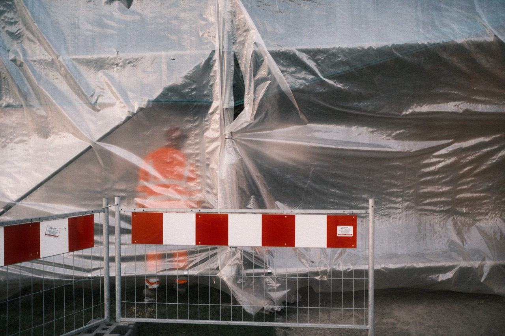
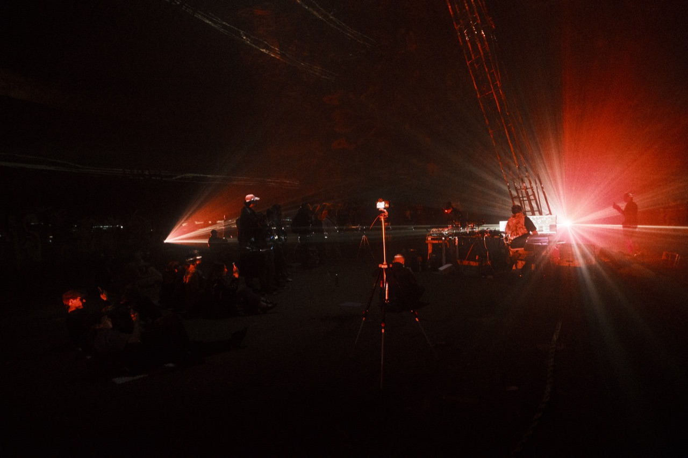

A selection of photos I've taken on my beloved Fuji X-M5.

2026.05.02 23mm 1/125 f/13 ISO 320 XF23mmF2 R WR Acros Spain 2026

2026.03.15 23mm 1/400 f/2 ISO 8000 XF23mmF2 R WR Classic Negative Czech Republic 2026

2026.01.26 31.4mm 1/30 f/4.7 ISO 1600 XC15-45mmF3.5-5.6 OIS PZ Acros Tenerife 2026

2025.12.20 15mm 1/20 f/3.5 ISO 1000 XC15-45mmF3.5-5.6 OIS PZ Classic Chrome Germany 2025

2025.11.23 45mm 1/1000 f/6.4 ISO 1600 XC15-45mmF3.5-5.6 OIS PZ Acros Poland 2025

2026.02.01 45mm 1/320 f/14 ISO 640 XC15-45mmF3.5-5.6 OIS PZ Classic Negative Tenerife 2026
2026.04.06 23mm 1/125 f/5.6 ISO 320 XF23mmF2 R WR Acros Poland 2026

2026.01.01 15.6mm 1/20 f/3.5 ISO 10000 XC15-45mmF3.5-5.6 OIS PZ Classic Negative Poland 2026

2026.02.24 23mm 1/1000 f/5.6 ISO 1600 XF23mmF2 R WR Acros Poland 2026

2026.03.11 23mm 1/640 f/2 ISO 1250 XF23mmF2 R WR Classic Negative Poland 2026

2025.09.06 15mm 1/6 f/3.5 ISO 8000 XC15-45mmF3.5-5.6 OIS PZ Classic Negative Germany 2025